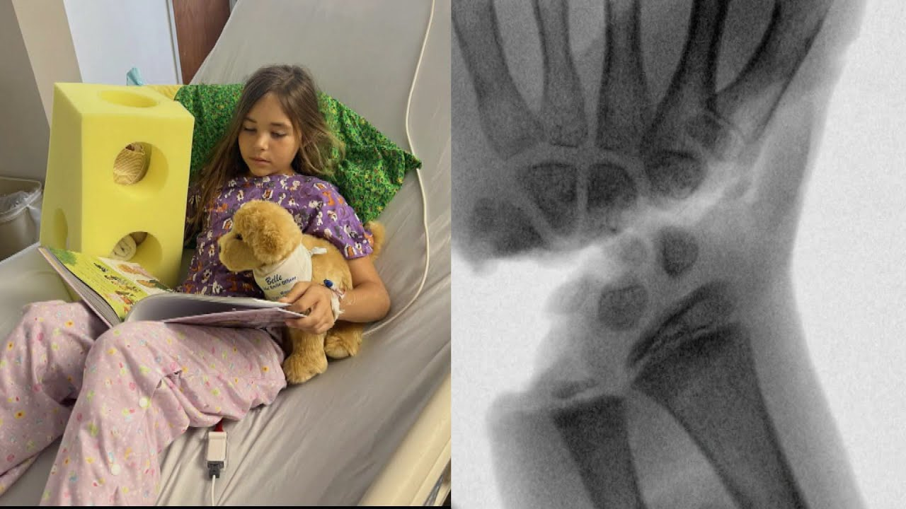

【10岁女孩鲨口脱险后发声】
Summary: A 10-year-old girl miraculously survived a shark attack that severed her hand, which doctors successfully reattached. She bravely recounts the traumatic event during her recovery.
摘要： 一名10岁女孩在鲨鱼袭击中奇迹生还，被咬断的手经医生成功再植。康复期间，她勇敢讲述了这段创伤经历。

⏱️ Estimated Reading Time: 4 min
📚 六级生词 📚 雅思生词 📚 托福生词 📚 专八生词 📚 SAT生词 📚 考研生词 📚 GRE生词 📚 高考生词
It was a terrifying day at the beach as a 10-year-old girl swimming just feet away from her mom was attacked by a shark that almost bit her hand entirely off.
海滩上惊现恐怖一幕：一名10岁女孩在距母亲仅几步之遥处游泳时遭鲨鱼袭击，手部几乎被整个咬断。
Amazingly, doctors were able to reattach her hand.
令人惊叹的是，医生成功将她的手重新接回。
And she's on the road to recovery with the help of a big yellow arm support that lots of people say looks like a block of cheese.
她正借助一个被许多人称为"奶酪块"的黄色手臂支架进行康复。
What a brave little lady.
多么勇敢的小姑娘。
And have you ever seen a cast that big?
你见过这么大的石膏吗？
It looks like a giant block of cheese over her arm.
它像一块巨型奶酪覆盖在她手臂上。
10-year-old Leah Lindell miraculously survived a shark attack that bit off her hand, leaving it dangling by a thin thread of skin.
10岁的莉娅·林德尔奇迹般地从鲨鱼袭击中生还，她的手被咬断，仅靠一丝皮肤悬垂着。
Her hand has been reattached by a team of miracle surgeons at Tampa General Hospital.
坦帕综合医院的"奇迹外科团队"完成了断手再植手术。
At a news conference today, Leah told what happened that day on the beach with her family.
在今天的新闻发布会上，莉娅讲述了那天与家人在海滩上的遭遇。
I didn't see anything.
我什么都没看见。
I was just snorkeling.
我当时正在浮潜。
Then I went up to breathe and then something hard bit me and then and tried to take me away.
当我浮上水面呼吸时，突然被某个坚硬物体咬住并试图拖走。
Then I pick up my hand and it's all in blood.
当我抬起手时，发现满手是血。
Then I started screaming.
随后我开始尖叫。
It was a bull shark.
那是条牛鲨。
As she was coming up, I heard like this yell or scream and I I saw like the fling of the arm and it was like almost completely gone.
她浮出水面时，我听到尖叫并看到她的手臂甩动——几乎已经完全断离。
I heard some yelling and I see Leah pick up her hand and it's from far away.
我听到喊叫声，远远看见莉娅举起了她的手。
It looked like like a crab grabbed her or something like that.
起初以为是螃蟹钳住了她。
It wasn't a crab.
但那不是螃蟹。
It was her severed hand.
是她被咬断的手。
Body cam footage shows her mother, Nadia, telling first responders what happened.
执法记录仪显示，母亲娜迪亚正向急救人员描述事发经过。
That's your daughter.
"那是你女儿吗？"
It's my daughter.
"是我女儿。"
Okay.
"明白。"
She couldn't believe her daughter's wherewithal in the moments after the attack.
她难以相信女儿遇袭后的应变能力。
Leah was already running.
莉娅当时已经在奔跑。
She was so quick.
她的反应极其迅速。
Her instincts kicked in.
求生本能瞬间爆发。
I'm so thankful that she she was able to do that.
"非常感谢她能这样做。"
I'm sorry.
"抱歉..."
There's what?
"什么情况？"
A good Samaritan applied a tourniquet to stop the bleeding.
一位好心人用止血带为她止住了血。
You're being very brave.
"你非常勇敢。"
Leo was treated at the scene, then immediately airlifted to Tampa General.
莉娅经现场急救后，立即被直升机送往坦帕综合医院。
There's a helicopter down there on the pad.
"停机坪上有架直升机。"
This is an X-ray of the injury, and her surgeon says in a sense, Leah was lucky it was a shark.
这是伤情X光片，主刀医生表示从某种意义说，遭遇鲨鱼反而是莉娅的幸运。
The shark's teeth are so so sharp that the cut through the wrist is clean.
鲨鱼牙齿极其锋利，造就了干净利落的手腕切口。
After 8 days in the hospital, she's already able to wiggle two fingers.
住院8天后，她已能活动两根手指。
And this guy has been a big part of her recovery.
这个"小伙伴"在她的康复中功不可没。
Belle, the service dog.
服务犬贝儿。
Look at that wagging tail.
看它摇摆的尾巴。
She always came to lick me and play with me.
"它总来舔我、陪我玩。"
As for the giant device on Leah's arm, it's called a foam arm cradle.
莉娅手臂上的巨型装置名为泡沫臂托。
Inside Edition producer Lauren Lavell tried one on.
《内幕》节目制片人劳伦·拉维尔试戴了同款。
We would anticipate a lot of swelling and by wearing this, it reduces the swelling.
"预期会出现严重肿胀，佩戴这个能有效消肿。"
It's some sort of miracle that God did in her life that now she has a hand.
"上帝在她生命中创造的奇迹，让她保住了这只手。"
Doctors say Leah's young age is playing a big role in why she's recovering so well.
医生表示，年幼是莉娅恢复良好的重要因素。
[Music]
[音乐]